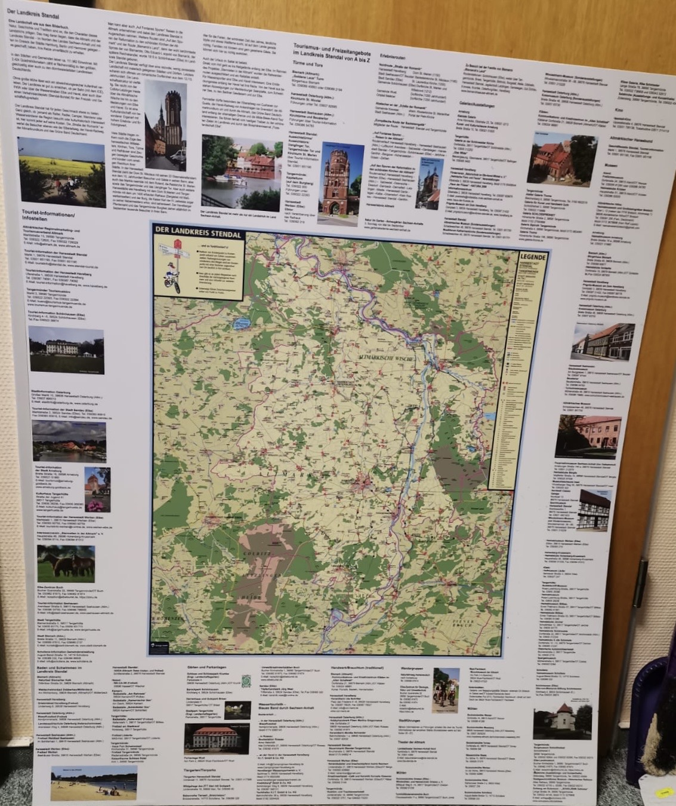
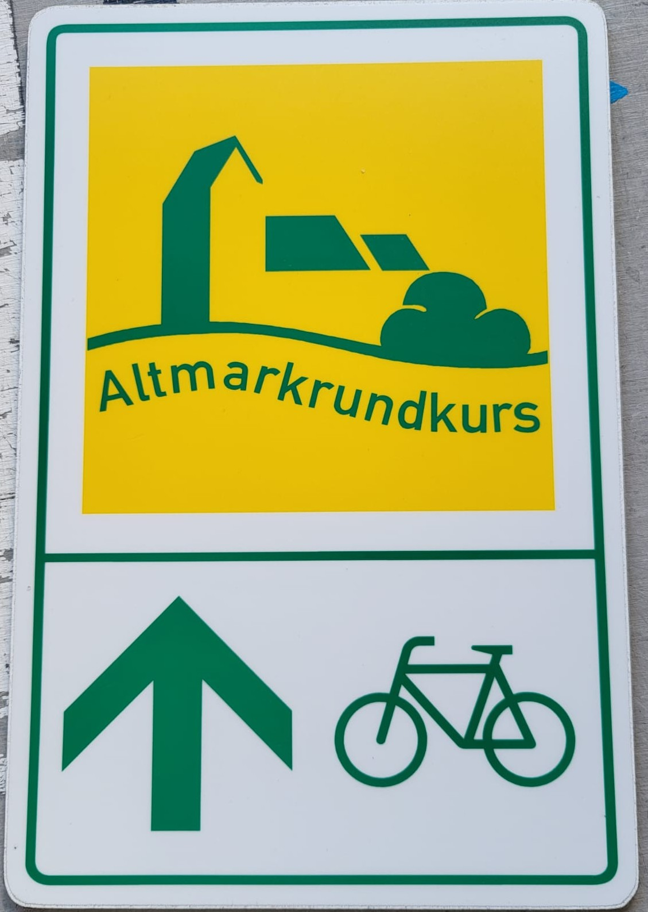
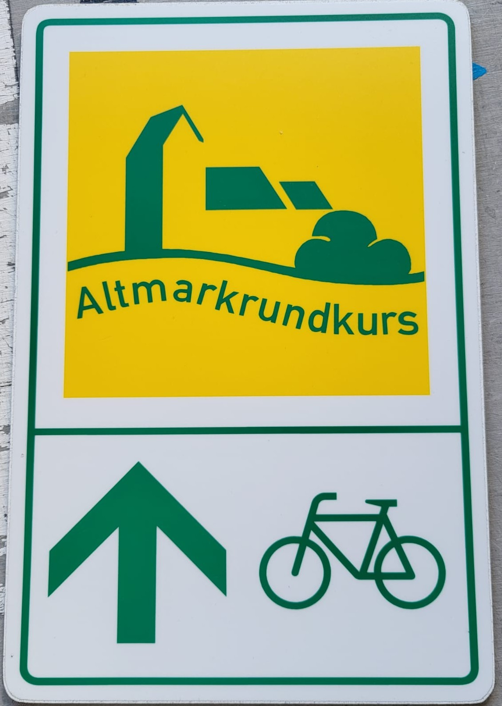
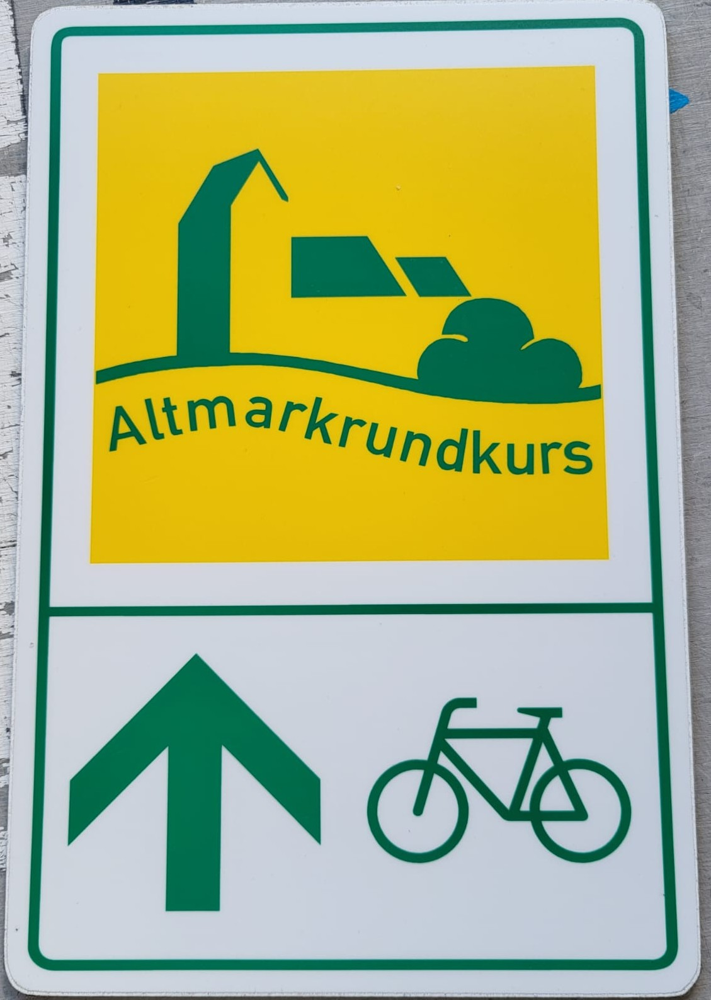

Digitaldruck – grenzenlose Möglichkeiten für Ihre Werbung
Ob Fahrzeuge, Gebäude, Maschinen oder Werbeflächen – moderner Digitaldruck macht Ihre Botschaft überall sichtbar. Wir fertigen Aufkleber, Etiketten und Folien in erstklassiger Qualität, die langlebig und witterungsbeständig sind. Jede Fläche wird so zu Ihrer Werbefläche!
Unsere Digitaldruck-Leistungen:
- Aufkleber und Etiketten – in allen Formen und Größen, ideal für Branding oder Produktkennzeichnung.
- Fensterfolien – dekorativ, auffällig oder als Sichtschutz mit Werbeeffekt.
- Maschinen- und Gerätebeschriftungen – präzise, strapazierfähig und langlebig.
Ihre Vorteile mit unserem Digitaldruck:
- Brillante Farben und gestochen scharfe Details
- Witterungsbeständig, UV- und kratzfest
- Flexible Formate – für jedes Projekt die passende Größe
- Kreative Lösungen für Innenräume
- Individuelle Gestaltung und Umsetzung
Mit unserem hochwertigen Digitaldruck setzen wir Ihre Werbung überall wirkungsvoll in Szene – kreativ und zuverlässig.

 


